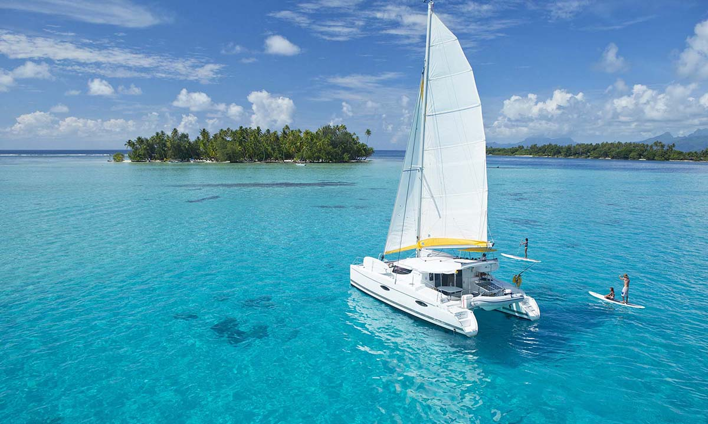
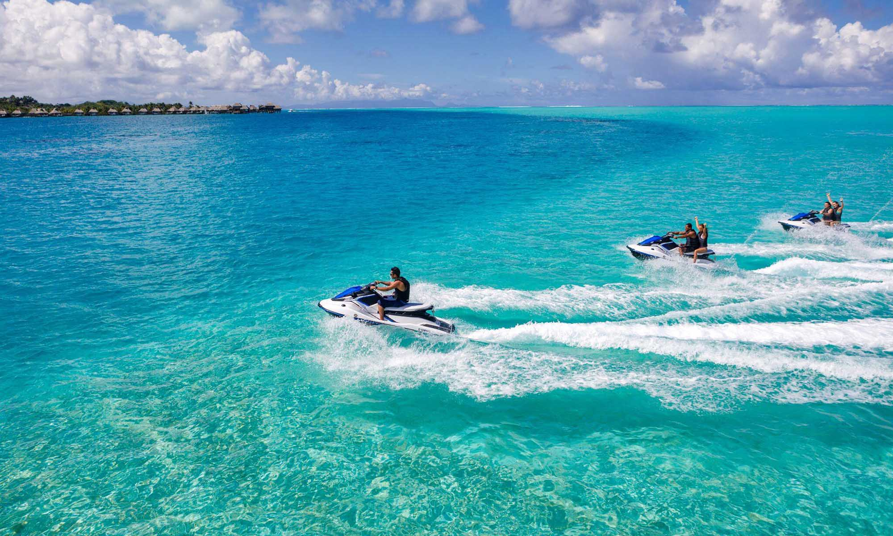
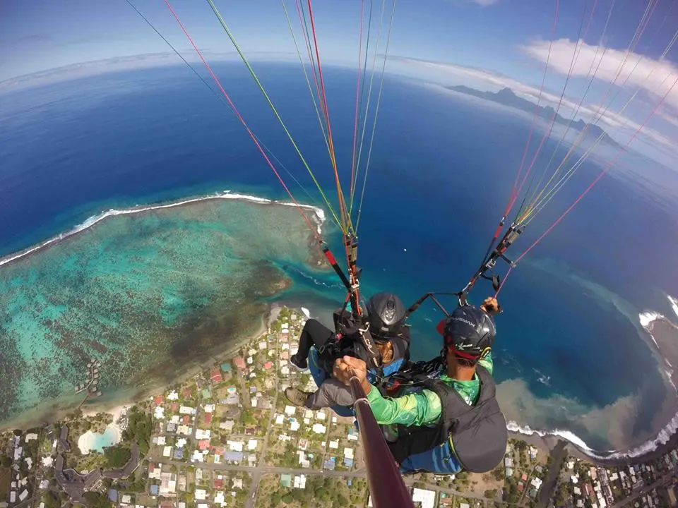
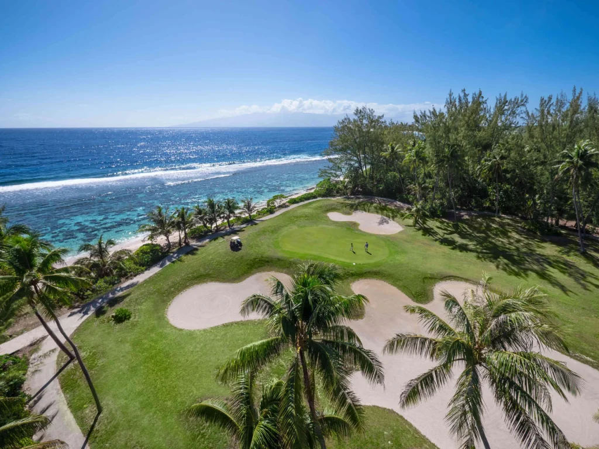
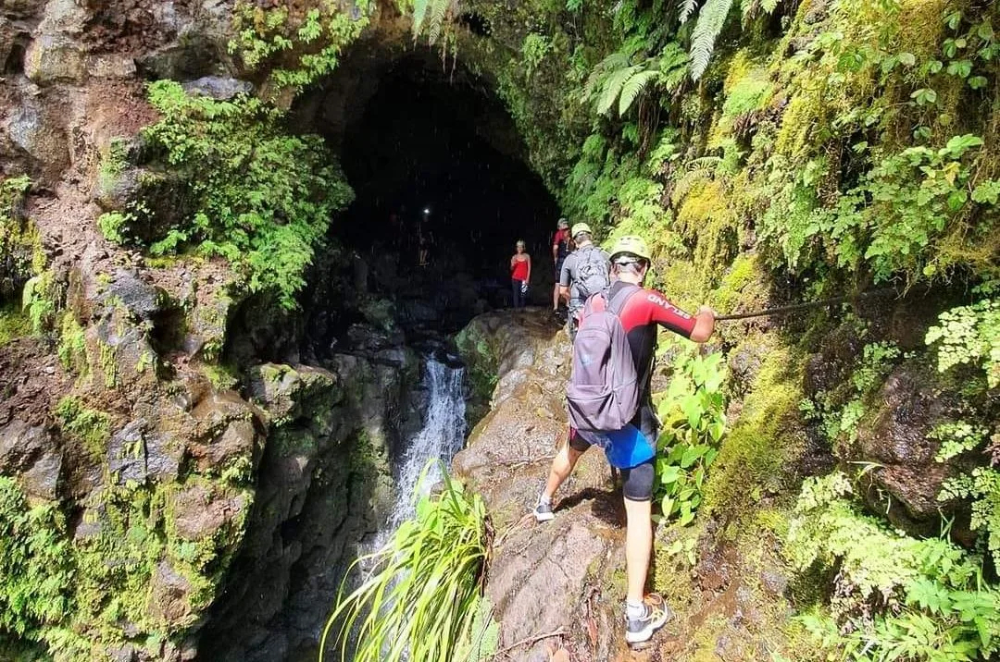
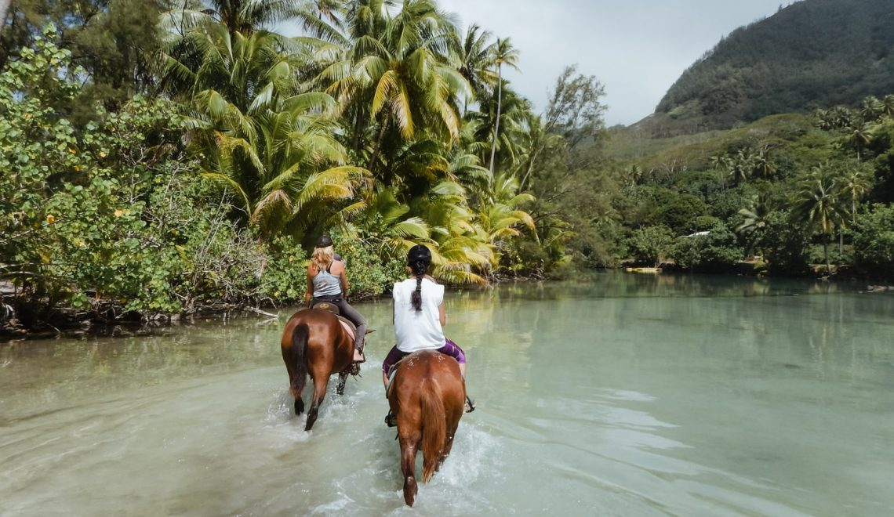

Découvrez Tahiti autrement :
Activités insolites et sensations fortes
Ou, tout simplement, du golf ou de l'équitation dans des paysages enchanteurs
Prenez de la distance pour apprécier Tahiti sous tous ses angles !
Croisières & Location de voiliers
Prenez le large et découvrez la silhouette majestueuse de Tahiti depuis l'océan. Louer un voilier ou s'offrir une croisière privée vous permet d'accéder à des motus isolés, de naviguer au coucher du soleil et de vivre au rythme des alizés polynésiens, loin du tumulte de la côte.

Jet Ski
Faites le plein de sensations fortes en glissant à toute vitesse sur les eaux cristallines du lagon. Encadrées par des guides locaux, les randonnées en jet ski vous emmènent explorer les plus beaux recoins de la côte, avec parfois la chance de croiser des dauphins au large des passes.

Parapente
Prenez de la hauteur et offrez-vous un panorama spectaculaire à 360 degrés sur Tahiti. En vous élançant depuis les hauteurs de l'île en vol tandem, vous survolerez les vallées verdoyantes et profiterez d'une vue plongeante saisissante sur le dégradé de bleus du lagon et les récifs coralliens.

Profitez de la quiétude de l'île
à travers des expériences sereines ou insolites !
Golf international d'Atimaono
Que vous soyez amateur ou joueur confirmé, le parcours d'Atimaono vous accueille dans un cadre tropical unique. Situé sur la côte sud, ce parcours de 18 trous serpente entre une végétation luxuriante, des arbres majestueux et offre des perspectives superbes sur les montagnes environnantes.

Canyoning
Explorez le cœur sauvage et secret de Tahiti en plongeant dans ses canyons. Au programme : descentes en rappel le long de cascades impressionnantes, glissades sur des toboggans naturels façonnés dans la roche basaltique et sauts dans des vasques d'eau douce d'une pureté absolue.

Accrobranche
Prenez de la hauteur d'une tout autre manière en vous aventurant dans les parcours d'accrobranche nichés au cœur des vallées tahitiennes. Entre tyroliennes géantes, ponts de singe et passerelles suspendues, c'est l'activité idéale pour faire le plein de sensations en famille au milieu de arbres centenaires.
Visite à cheval
Découvrez le rythme paisible de la vie polynésienne lors d'une randonnée équestre. Des plaines et plateaux de Taravao aux sentiers arborés du fond des vallées, monter à cheval permet d'accéder à des points de vue exceptionnels et de s'imprégner de la nature sauvage à un tout autre rythme.
